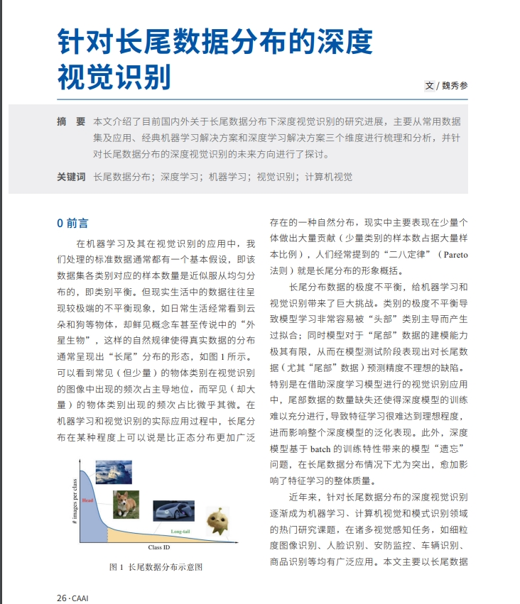
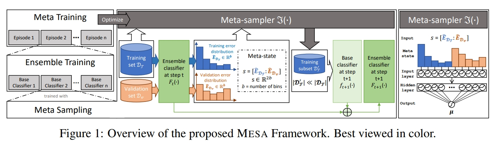

Paper Reading
| No. | Venue | Paper Name | Authors | Code | Notes | Update time |
|---|---|---|---|---|---|---|
| 1 | TEVC 2016 |
A Survey on Evolutionary Computation Approaches to Feature SelectionFeature selection is an important task in data mining and machine learning to reduce the dimensionality of the data and increase the performance of an algorithm, such as a classification algorithm. However, feature selection is a challenging task due mainly to the large search space. A variety of methods have been applied to solve feature selection problems, where evolutionary computation (EC) techniques have recently gained much attention and shown some success. However, there are no comprehensive guidelines on the strengths and weaknesses of alternative approaches. This leads to a disjointed and fragmented field with ultimately lost opportunities for improving performance and successful applications. This paper presents a comprehensive survey of the state-of-the-art work on EC for feature selection, which identifies the contributions of these different algorithms. In addition, current issues and challenges are also discussed to identify promising areas for future research. 

|
Bing Xue, Mengjie Zhang, Will N. Browne & Xin Yao. | × | [进化计算] [特征选择] | Jan 1, 2022 |
| 2 | ICDE 2020 |
Self-paced Ensemble for Highly Imbalanced Massive Data ClassificationMany real-world applications reveal difficulties in learning classifiers from imbalanced data. The rising big data era has been witnessing more classification tasks with large-scale but extremely imbalance and low-quality datasets. Most of existing learning methods suffer from poor performance or low computation efficiency under such a scenario. To tackle this problem, we conduct deep investigations into the nature of class imbalance, which reveals that not only the disproportion between classes, but also other difficulties embedded in the nature of data, especially, noises and class overlapping, prevent us from learning effective classifiers. Taking those factors into consideration, we propose a novel framework for imbalance classification that aims to generate a strong ensemble by self-paced harmonizing data hardness via under-sampling. Extensive experiments have shown that this new framework, while being very computationally efficient, can lead to robust performance even under highly overlapping classes and extremely skewed distribution. Note that, our methods can be easily adapted to most of existing learning methods (e.g., C4.5, SVM, GBDT and Neural Network) to boost their performance on imbalanced data.
|
Zhining Liu, Wei Cao, Zhifeng Gao, Jiang Bian, Hechang Chen, Yi Chang & Tie-Yan Liu. | [SPE ] | [zhihu]
[awesome-imbalanced-learning] [类别不平衡学习：论文/代码/框架/库] |
Jan 1, 2022 |
| 3 | AAAI 2020 |
A Novel Model for Imbalanced Data ClassificationRecently, imbalanced data classification has received much attention due to its wide applications. In the literature, existing researches have attempted to improve the classification performance by considering various factors such as the imbalanced distribution, cost-sensitive learning, data space improvement, and ensemble learning. Nevertheless, most of the existing methods focus on only part of these main aspects/factors. In this work, we propose a novel imbalanced data classification model that considers all these main aspects. To evaluate the performance of our proposed model, we have conducted experiments based on 14 public datasets. The results show that our model outperforms the state-of-the-art methods in terms of recall, G-mean, F-measure and AUC.
|
Jian Yin, Chunjing Gan, Kaiqi Zhao, Xuan Lin, Zhe Quan & Zhi-Jie Wang. | × | [集成学习] [代价敏感] [数据分布] | Jan 1st, 2022 |
| 4 | arXiv 2021 |
Towards Inter-class and Intra-class Imbalance in Class-imbalanced LearningImbalanced Learning (IL) is an important problem that widely exists in data mining applications. Typical IL methods utilize intuitive class-wise resampling or reweighting to directly balance the training set. However, some recent research efforts in specific domains show that class-imbalanced learning can be achieved without class-wise manipulation. This prompts us to think about the relationship between the two different IL strategies and the nature of the class imbalance. Fundamentally, they correspond to two essential imbalances that exist in IL: the difference in quantity between examples from different classes as well as between easy and hard examples within a single class, i.e., inter-class and intra-class imbalance. Existing works fail to explicitly take both imbalances into account and thus suffer from suboptimal performance. In light of this, we present Duple-Balanced Ensemble, namely DUBE , a versatile ensemble learning framework. Unlike prevailing methods, DUBE directly performs inter-class and intra-class balancing without relying on heavy distance-based computation, which allows it to achieve competitive performance while being computationally efficient. We also present a detailed discussion and analysis about the pros and cons of different inter/intra-class balancing strategies based on DUBE . Extensive experiments validate the effectiveness of the proposed method. Code and examples are available at this https URL.
|
Zhining Liu, Pengfei Wei, Zhepei Wei, Boyang Yu, Jing Jiang, Wei Cao, Jiang Bian & Yi Chang. | [DuBE] | [zhihu] [类内类间不平衡] | Jan 2, 2022 |
| 5 | TPAMI Early Access |
Collaborative Learning of Label Semantics and Deep Label-Specific Features for Multi-Label ClassificationIn multi-label classification, the strategy of label-specific features has been shown to be effective to learn from multi-label examples by accounting for the distinct discriminative properties of each class label. However, most existing approaches exploit the semantic relations among labels as immutable prior knowledge, which may not be appropriate to constrain the learning process of label-specific features. In this paper, we propose to learn label semantics and label-specific features in a collaborative way. Accordingly, a deep neural network (DNN) based approach named CLIF, i.e. Collaborative Learning of label semantIcs and deep label-specific Features for multi-label classification, is proposed. By integrating a graph autoencoder for encoding semantic relations in the label space and a tailored feature-disentangling module for extracting label-specific features, CLIF is able to employ the learned label semantics to guide mining label-specific features and propagate label-specific discriminative properties to the learning process of the label semantics. In such a way, the learning of label semantics and label-specific features interact and facilitate with each other so that label semantics can provide more accurate guidance to label-specific feature learning. Comprehensive experiments on 14 benchmark data sets show that our approach outperforms other well-established multi-label classification algorithms.
|
Jun-Yi Hang & Min-Ling Zhang. | [CLIF] | [类属属性] [标记语义] [多标记学习] | Jan 2, 2022 |
| 6 | JAS 2021 |
An Overview of Recommendation Techniques and Their Applications in HealthcareWith the increasing amount of information on the internet, recommendation system (RS) has been utilized in a variety of fields as an efficient tool to overcome information overload. In recent years, the application of RS for health has become a growing research topic due to its tremendous advantages in providing appropriate recommendations and helping people make the right decisions relating to their health. This paper aims at presenting a comprehensive review of typical recommendation techniques and their applications in the field of healthcare. More concretely, an overview is provided on three famous recommendation techniques, namely, content-based, collaborative filtering (CF)-based, and hybrid methods. Next, we provide a snapshot of five application scenarios about health RS, which are dietary recommendation, lifestyle recommendation, training recommendation, decision-making for patients and physicians, and disease-related prediction. Finally, some key challenges are given with clear justifications to this new and booming field.
|
Wenbin Yue, Zidong Wang, Jieyu Zhang & Xiaohui Liu. | × | [推荐系统] [健康医疗] [综述] | Jan 2, 2022 |
| 7 | CVPR 2021 |
Seesaw Loss for Long-Tailed Instance SegmentationInstance segmentation has witnessed a remarkable progress on class-balanced benchmarks. However, they fail to perform as accurately in real-world scenarios, where the category distribution of objects naturally comes with a long tail. Instances of head classes dominate a long-tailed dataset and they serve as negative samples of tail categories. The overwhelming gradients of negative samples on tail classes lead to a biased learning process for classifiers. Consequently, objects of tail categories are more likely to be misclassified as backgrounds or head categories. To tackle this problem, we propose Seesaw Loss to dynamically re-balance gradients of positive and negative samples for each category, with two complementary factors, i.e., mitigation factor and compensation factor. The mitigation factor reduces punishments to tail categories w.r.t. the ratio of cumulative training instances between different categories. Meanwhile, the compensation factor increases the penalty of misclassified instances to avoid false positives of tail categories. We conduct extensive experiments on Seesaw Loss with mainstream frameworks and different data sampling strategies. With a simple end-to-end training pipeline, Seesaw Loss obtains significant gains over Cross-Entropy Loss, and achieves state-of-the-art performance on LVIS dataset without bells and whistles. Code is available at https://github.com/open-mmlab/mmdetection.
|
Jiaqi Wang, Wenwei Zhang, Yuhang Zang, Yuhang Cao, Jiangmiao Pang, Tao Gong, Kai Chen, Ziwei Liu, Chen Change Loy & Dahua Lin. | [Seasaw] | [Seesaw Loss：一种面向长尾目标检测的平衡损失函数] | Jan 2, 2022 |
| 8 | TNNLS early acess |
Parameter-Free Loss for Class-Imbalanced Deep Learning in Image ClassificationCurrent state-of-the-art class-imbalanced loss functions for deep models require exhaustive tuning on hyperparameters for high model performance, resulting in low training efficiency and impracticality for nonexpert users. To tackle this issue, a parameter-free loss (PF-loss) function is proposed, which works for both binary and multiclass-imbalanced deep learning for image classification tasks. PF-loss provides three advantages: 1) training time is significantly reduced due to NO tuning on hyperparameter(s); 2) it dynamically pays more attention on minority classes (rather than outliers compared to the existing loss functions) with NO hyperparameters in the loss function; and 3) higher accuracy can be achieved since it adapts to the changes of data distribution in each mini-batch instead of the fixed hyperparameters in the existing methods during training, especially when the data are highly skewed. Experimental results on some classical image datasets with different imbalance ratios (IR, up to 200) show that PF-loss reduces the training time down to 1/148 of that spent by compared state-of-the-art losses and simultaneously achieves comparable or even higher accuracy in terms of both G-mean and area under receiver operating characteristic (ROC) curve (AUC) metrics, especially when the data are highly skewed.
|
Jie Du, Yanhong Zhou, Peng Liu, Chi-Man Vong & Tianfu Wang. | [Seasaw] | [Parameter-Free loss处理临床类别不平衡问题] | Jan 3, 2022 |
| 9 | CAAI |
针对长尾数据分布的深度视觉识别

|
魏秀参. | × | [长尾分类] [Long tail learning] | Jan 3, 2022 |
| 10 | NIPS 2017 |
A Unified Approach to Interpreting Model PredictionsUnderstanding why a model makes a certain prediction can be as crucial as the prediction's accuracy in many applications. However, the highest accuracy for large modern datasets is often achieved by complex models that even experts struggle to interpret, such as ensemble or deep learning models, creating a tension between accuracy and interpretability. In response, various methods have recently been proposed to help users interpret the predictions of complex models, but it is often unclear how these methods are related and when one method is preferable over another. To address this problem, we present a unified framework for interpreting predictions, SHAP (SHapley Additive exPlanations). SHAP assigns each feature an importance value for a particular prediction. Its novel components include: (1) the identification of a new class of additive feature importance measures, and (2) theoretical results showing there is a unique solution in this class with a set of desirable properties. The new class unifies six existing methods, notable because several recent methods in the class lack the proposed desirable properties. Based on insights from this unification, we present new methods that show improved computational performance and/or better consistency with human intuition than previous approaches.
|
Scott M. Lundberg & Su-In Lee. | [SHAP] | [Python-SHAP的实现] [模型可解释] | Jan 3, 2022 |
| 11 | NeurIPS 2020 |
Rethinking the Value of Labels for Improving Class-Imbalanced LearningReal-world data often exhibits long-tailed distributions with heavy class imbalance, posing great challenges for deep recognition models. We identify a persisting dilemma on the value of labels in the context of imbalanced learning: on the one hand, supervision from labels typically leads to better results than its unsupervised counterparts; on the other hand, heavily imbalanced data naturally incurs ''label bias'' in the classifier, where the decision boundary can be drastically altered by the majority classes. In this work, we systematically investigate these two facets of labels. We demonstrate, theoretically and empirically, that class-imbalanced learning can significantly benefit in both semi-supervised and self-supervised manners. Specifically, we confirm that (1) positively, imbalanced labels are valuable: given more unlabeled data, the original labels can be leveraged with the extra data to reduce label bias in a semi-supervised manner, which greatly improves the final classifier; (2) negatively however, we argue that imbalanced labels are not useful always: classifiers that are first pre-trained in a self-supervised manner consistently outperform their corresponding baselines. Extensive experiments on large-scale imbalanced datasets verify our theoretically grounded strategies, showing superior performance over previous state-of-the-arts. Our intriguing findings highlight the need to rethink the usage of imbalanced labels in realistic long-tailed tasks. Code is available at https://github.com/YyzHarry/imbalanced-semi-self.
|
Yuzhe Yang & Zhi Xu. | [SSP] | [微信公众号][类不平衡][长尾分布][半监督][自监督学习] | Jan 3, 2022 |
| 12 | Applied Intelligence early acess |
Bi-directional mapping for multi-label learning of label-specific featuresIn multi-label learning, scholars have proposed many multi-label learning algorithms that explore label-specific features in recent years. Previous studies tend to focus only on the forward projection of the instance feature space to the category label space to learn label-specific features for multi-label classification, and only simple correlations between labels are considered; however, the loss of discriminative information in the instance space and the essential connections between labels resulting from the reduction of feature dimensionality during forward projection are usually ignored. Based on the overall consideration, in this paper, we propose a bi-directional mapping for multi-label learning of label-specific features method(BDLS). Specifically, under a unified linear model for learning label-specific features for multi-label classification, we propose a novel reconstruction loss function to compensate for the loss of discriminative information generated during forward mapping. And we also propose an effective causal learning machine to explore the intrinsic causal relationships among labels for the purpose of mining the essential connections among labels. Experimental results and analysis on several multi-label datasets validate the effectiveness of our proposed method.
|
Yi Tan, Dong Sun, Yu Shi, Liuya Gao, Qingwei Gao & Yixiang Lu. | [BDLS] | [类属特征学习] [标记因果] [多标记学习][代码备份] | Jan 3, 2022 |
| 13 | TPAMI early acess |
The Emerging Trends of Multi-Label LearningExabytes of data are generated daily by humans, leading to the growing need for new efforts in dealing with the grand challenges for multi-label learning brought by big data. For example, extreme multi-label classification is an active and rapidly growing research area that deals with classification tasks with an extremely large number of classes or labels; utilizing massive data with limited supervision to build a multi-label classification model becomes valuable for practical applications, etc. Besides these, there are tremendous efforts on how to harvest the strong learning capability of deep learning to better capture the label dependencies in multi-label learning, which is the key for deep learning to address real-world classification tasks. However, it is noted that there has been a lack of systemic studies that focus explicitly on analyzing the emerging trends and new challenges of multi-label learning in the era of big data. It is imperative to call for a comprehensive survey to fulfill this mission and delineate future research directions and new applications.
|
Weiwei Liu, Xiaobo Shen, Haobo Wang & Ivor W. Tsang. | × | [多标签学习的新趋势][多标记][综述] | Jan 3, 2022 |
| 14 | arXiv 2020 |
Deep Long-Tailed Learning: A SurveyDeep long-tailed learning, one of the most challenging problems in visual recognition, aims to train well-performing deep models from a large number of images that follow a long-tailed class distribution. In the last decade, deep learning has emerged as a powerful recognition model for learning high-quality image representations and has led to remarkable breakthroughs in generic visual recognition. However, long-tailed class imbalance, a common problem in practical visual recognition tasks, often limits the practicality of deep network based recognition models in real-world applications, since they can be easily biased towards dominant classes and perform poorly on tail classes. To address this problem, a large number of studies have been conducted in recent years, making promising progress in the field of deep long-tailed learning. Considering the rapid evolution of this field, this paper aims to provide a comprehensive survey on recent advances in deep long-tailed learning. To be specific, we group existing deep long-tailed learning studies into three main categories (i.e., class re-balancing, information augmentation and module improvement), and review these methods following this taxonomy in detail. Afterward, we empirically analyze several state-of-the-art methods by evaluating to what extent they address the issue of class imbalance via a newly proposed evaluation metric, i.e., relative accuracy. We conclude the survey by highlighting important applications of deep long-tailed learning and identifying several promising directions for future research.
|
Yifan Zhang, Bingyi Kang, Bryan Hooi, Shuicheng Yan & Jiashi Feng. | × | [正视长尾挑战！颜水成、冯佳时团队《深度长尾学习》综述] | Jan 3, 2022 |
| 15 | ACM Computing Surveys 2020 |
Generalizing from a Few Examples: A Survey on Few-shot LearningMachine learning has been highly successful in data-intensive applications but is often hampered when the data set is small. Recently, Few-shot Learning (FSL) is proposed to tackle this problem. Using prior knowledge, FSL can rapidly generalize to new tasks containing only a few samples with supervised information. In this article, we conduct a thorough survey to fully understand FSL. Starting from a formal definition of FSL, we distinguish FSL from several relevant machine learning problems. We then point out that the core issue in FSL is that the empirical risk minimizer is unreliable. Based on how prior knowledge can be used to handle this core issue, we categorize FSL methods from three perspectives: (i) data, which uses prior knowledge to augment the supervised experience; (ii) model, which uses prior knowledge to reduce the size of the hypothesis space; and (iii) algorithm, which uses prior knowledge to alter the search for the best hypothesis in the given hypothesis space. With this taxonomy, we review and discuss the pros and cons of each category. Promising directions, in the aspects of the FSL problem setups, techniques, applications, and theories, are also proposed to provide insights for future research.
|
Yaqing Wang, Quanming Yao, James T. Kwok & Lionel M. Ni. | × | [小样本学习] [Few-shot Learning] | Jan 3, 2022 |
| 16 | IJCAI 2021 |
Few-Shot Partial-Label LearningPartial-label learning (PLL) generally focuses on inducing a noise-tolerant multi-class classifier by training on overly-annotated samples, each of which is annotated with a set of labels, but only one is the valid label. A basic promise of existing PLL solutions is that there are sufficient partial-label (PL) samples for training. However, it is more common than not to have just few PL samples at hand when dealing with new tasks. Furthermore, existing few-shot learning algorithms assume precise labels of the support set; as such, irrelevant labels may seriously mislead the meta-learner and thus lead to a compromised performance. How to enable PLL under a few-shot learning setting is an important problem, but not yet well studied. In this paper, we introduce an approach called FsPLL (Few-shot PLL). FsPLL first performs adaptive distance metric learning by an embedding network and rectifying prototypes on the tasks previously encountered. Next, it calculates the prototype of each class of a new task in the embedding network. An unseen example can then be classified via its distance to each prototype. Experimental results on widely-used few-shot datasets demonstrate that our FsPLL can achieve a superior performance than the state-of-the-art methods, and it needs fewer samples for quickly adapting to new tasks.
|
Yunfeng Zhao, Guoxian Yu, Lei Liu, Zhongmin Yan, Lizhen Cui & Carlotta Domeniconi. | [FsPLL] | [少样本学习] [偏标记学习] | Jan 3, 2022 |
| 17 | NeurIPS 2021 |
Gaussian Mixture Variational Autoencoder with Contrastive Learning for Multi-Label ClassificationMulti-label classification (MLC) is a prediction task where each sample can have more than one label. We propose a novel contrastive learning boosted multi-label prediction model based on a Gaussian mixture variational autoencoder (C-GMVAE), which learns a multimodal prior space and employs a contrastive loss. Many existing methods introduce extra complex neural modules to capture the label correlations, in addition to the prediction modules. We found that by using contrastive learning in the supervised setting, we can exploit label information effectively, and learn meaningful feature and label embeddings capturing both the label correlations and predictive power, without extra neural modules. Our method also adopts the idea of learning and aligning latent spaces for both features and labels. C-GMVAE imposes a Gaussian mixture structure on the latent space, to alleviate posterior collapse and over-regularization issues, in contrast to previous works based on a unimodal prior. C-GMVAE outperforms existing methods on multiple public datasets and can often match other models' full performance with only 50% of the training data. Furthermore, we show that the learnt embeddings provide insights into the interpretation of label-label interactions.
|
Junwen Bai, Shufeng Kong & Carla P. Gomes. | [C-DSVAE] | [对比学习] [多标记分类] | Jan 3, 2022 |
| 18 | Bioinformatic early acess |
Predicting the multi-label protein subcellular localization through multi-information fusion and MLSI dimensionality reduction based on MLFE classifierMulti-label classification (MLC) is a prediction task where each sample can have more than one label. We propose a novel contrastive learning boosted multi-label prediction model based on a Gaussian mixture variational autoencoder (C-GMVAE), which learns a multimodal prior space and employs a contrastive loss. Many existing methods introduce extra complex neural modules to capture the label correlations, in addition to the prediction modules. We found that by using contrastive learning in the supervised setting, we can exploit label information effectively, and learn meaningful feature and label embeddings capturing both the label correlations and predictive power, without extra neural modules. Our method also adopts the idea of learning and aligning latent spaces for both features and labels. C-GMVAE imposes a Gaussian mixture structure on the latent space, to alleviate posterior collapse and over-regularization issues, in contrast to previous works based on a unimodal prior. C-GMVAE outperforms existing methods on multiple public datasets and can often match other models' full performance with only 50% of the training data. Furthermore, we show that the learnt embeddings provide insights into the interpretation of label-label interactions.
|
Yushuang Liu, Shuping Jin, Hongli Gao, Xue Wang, Congjing Wang, Weifeng Zhou & Bin Yu. | [MLlocMLFE] | [多标记学习] [蛋白质预测] [维度约减][备用链接] | Jan 3, 2022 |
| 19 | TKDE 2021 |
Label Enhancement for Label Distribution LearningMulti-label classification (MLC) is a prediction task where each sample can have more than one label. We propose a novel contrastive learning boosted multi-label prediction model based on a Gaussian mixture variational autoencoder (C-GMVAE), which learns a multimodal prior space and employs a contrastive loss. Many existing methods introduce extra complex neural modules to capture the label correlations, in addition to the prediction modules. We found that by using contrastive learning in the supervised setting, we can exploit label information effectively, and learn meaningful feature and label embeddings capturing both the label correlations and predictive power, without extra neural modules. Our method also adopts the idea of learning and aligning latent spaces for both features and labels. C-GMVAE imposes a Gaussian mixture structure on the latent space, to alleviate posterior collapse and over-regularization issues, in contrast to previous works based on a unimodal prior. C-GMVAE outperforms existing methods on multiple public datasets and can often match other models' full performance with only 50% of the training data. Furthermore, we show that the learnt embeddings provide insights into the interpretation of label-label interactions.
|
Ning Xu, Yun-Peng Liu & Xin Geng. | [GLLE] | [标记增强] [标记分布学习] | Jan 3, 2022 |
| 20 | TCYB early acess |
Towards class-imbalance aware multi-label learningMulti-label learning deals with training examples each represented by a single instance while associated with multiple class labels. Due to the exponential number of possible label sets to be considered by the predictive model, it is commonly assumed that label correlations should be well exploited to design an effective multi-label learning approach. On the other hand, class-imbalance stands as an intrinsic property of multi-label data which significantly affects the generalization performance of the multi-label predictive model. For each class label, the number of training examples with positive labeling assignment is generally much less than those with negative labeling assignment. To deal with the class-imbalance issue for multi-label learning, a simple yet effective class-imbalance aware learning strategy called cross-coupling aggregation (Cocoa) is proposed in this article. Specifically, Cocoa works by leveraging the exploitation of label correlations as well as the exploration of class-imbalance simultaneously. For each class label, a number of multiclass imbalance learners are induced by randomly coupling with other labels, whose predictions on the unseen instance are aggregated to determine the corresponding labeling relevancy. Extensive experiments on 18 benchmark datasets clearly validate the effectiveness of Cocoa against state-of-the-art multi-label learning approaches especially in terms of imbalance-specific evaluation metrics.
|
Min-Ling Zhang, Yu-Kun Li & Xu-Ying Liu. | [COCOA] | [[多标记类不平衡][IJCAI'15会议版本] | Jan 4, 2022 |
| 21 | TFS early acess |
Multi-Label Takagi-Sugeno-Kang Fuzzy SystemMulti-label classification can effectively identify the relevant labels of an instance from a given set of labels. However, the modeling of the relationship between the features and the labels is critical to the classification performance. To this end, we pro-pose a new multi-label classification method, called Multi-Label Takagi-Sugeno-Kang Fuzzy System (ML-TSK FS), to improve the classification performance. The structure of ML-TSK FS is designed using fuzzy rules to model the relationship between features and labels. The fuzzy system is trained by integrating fuzzy inference based multi-label correlation learning with mul-ti-label regression loss. The proposed ML-TSK FS is evaluated by experimentally on 12 benchmark multi-label datasets. The results show that the performance of ML-TSK FS is competitive with existing methods in terms of various evaluation metrics, indicating that it is able to model the feature-label relationship effectively using fuzzy inference rules and enhances the classifi-cation performance.
|
Qiongdan Lou, Zhaohong Deng, Zhiyong Xiao, Kup-Sze Choi, Shitong Wang. | × | [[多标记学习][模糊] | Jan 4, 2022 |
| 22 | NeurIPS 2020 |
Boost Ensemble Imbalanced Learning with MEta-SAmplerImbalanced learning (IL), i.e., learning unbiased models from class-imbalanced data, is a challenging problem. Typical IL methods including resampling and reweighting were designed based on some heuristic assumptions. They often suffer from unstable performance, poor applicability, and high computational cost in complex tasks where their assumptions do not hold. In this paper, we introduce a novel ensemble IL framework named MESA. It adaptively resamples the training set in iterations to get multiple classifiers and forms a cascade ensemble model. MESA directly learns the sampling strategy from data to optimize the final metric beyond following random heuristics. Moreover, unlike prevailing meta-learning-based IL solutions, we decouple the model-training and meta-training in MESA by independently train the meta-sampler over task-agnostic meta-data. This makes MESA generally applicable to most of the existing learning models and the meta-sampler can be efficiently applied to new tasks. Extensive experiments on both synthetic and real-world tasks demonstrate the effectiveness, robustness, and transferability of MESA. 
|
Zhining Liu, Pengfei Wei, Jing Jiang, Wei Cao, Jiang Bian, Yi Chang. | [MESA] | [高效，自适应，可迁移，参数化的不平衡学习采样策略] [元学习 类不平学习 抽样] | Jan 5, 2022 |
| 23 | KBS 2022 |
Smart Robust Feature Selection (SoFt) for imbalanced and heterogeneous dataDesigning a smart and robust predictive model that can deal with imbalanced data and a heterogeneous set of features is paramount to its widespread adoption by practitioners. By smart, we mean the model is either parameter-free or works well with default parameters, avoiding the challenge of parameter tuning. Furthermore, a robust model should consistently achieve high accuracy regardless of any dataset (imbalance, heterogeneous set of features) or domain (such as medical, financial). To this end, a computationally inexpensive and yet robust predictive model named smart robust feature selection (SoFt) is proposed. SoFt involves selecting a learning algorithm and designing a filtering-based feature selection algorithm named multi evaluation criteria and Pareto (MECP). Two state-of-the-art gradient boosting methods (GBMs), CatBoost and H2O GBM, are considered potential candidates for learning algorithms. CatBoost is selected over H2O GBM due to its robustness with both default and tuned parameters. The MECP uses multiple parameter-free feature scores to rank the features. SoFt is validated against CatBoost with a full feature set and wrapper-based CatBoost. SoFt is robust and consistent for imbalanced datasets, i.e., average value and standard deviation of log loss are low across different folds of K-fold cross-validation. Features selected by MECP are also consistent, i.e., features selected by SoFt and wrapper-based CatBoost are consistent across different folds, demonstrating the effectiveness of MECP. For balanced datasets, MECP selects too few features, and hence, the log loss of SoFt is significantly higher than CatBoost with a full feature set.
|
Gary Kee Khoon Lee, Henry Kasim, Rajendra Prasad Sirigina, Shannon Shi Qi How, Stephen King & Terence Gih GuangHung. | × | [特征选择 类不平衡学习 异构数据学习] | Jan 5, 2022 |
| 24 | SDM 2022 |
Learning from Imbalanced Crowdsourced Labeled DataCrowdsourcing has proven to be a cost-effective way to meet the demands for massive labeled training data in supervised deep learning models. However, the obtained crowdsourced labels are often inconsistent and noisy due to cognitive and expertise differences among crowd workers. Existing approaches either infer latent true labels from noisy crowdsourced labels or learn a discriminative model directly from the crowdsourced labeled data, assuming the latent true label distribution is class-balanced. Unfortunately, in many real-world applications, the true label distribution typically is imbalanced across classes involved in the collected data. Therefore, in this paper, we address the problem of learning from crowdsourced labeled data with an imbalanced true label distribution. We propose a new framework, named “Learning from Imbalanced Crowdsourced Labeled Data” (ICED), which simultaneously infers true labels from imbalanced crowdsourced labeled data and achieves high accuracy on downstream tasks such as classification. The ICED framework consists of two modules— a true label inference module and a synthetic data generation module— that augment each other iteratively. Extensive experiments conducted on both synthetic and real-world datasets demonstrate the effectiveness of the ICED framework. We will release datasets and code used for evaluation based on the acceptance of this paper.
|
Wentao Wang, Joseph Thekinen, Xiaorui Liu, Zitao Liu, Jiliang Tang. | × | [众包学习] [类不平衡学习] [作者主页] | Jan 6, 2022 |
| 25 | CIKM 2021 |
RecBole: Towards a Unified, Comprehensive and Efficient Framework for Recommendation AlgorithmsIn recent years, there are a large number of recommendation algorithms proposed in the literature, from traditional collaborative filtering to deep learning algorithms. However, the concerns about how to standardize open source implementation of recommendation algorithms continually increase in the research community. In the light of this challenge, we propose a unified, comprehensive and efficient recommender system library called RecBole (pronounced as [rEk'boUl@r]), which provides a unified framework to develop and reproduce recommendation algorithms for research purpose. In this library, we implement 73 recommendation models on 28 benchmark datasets, covering the categories of general recommendation, sequential recommendation, context-aware recommendation and knowledge-based recommendation. We implement the RecBole library based on PyTorch, which is one of the most popular deep learning frameworks. Our library is featured in many aspects, including general and extensible data structures, comprehensive benchmark models and datasets, efficient GPU-accelerated execution, and extensive and standard evaluation protocols. We provide a series of auxiliary functions, tools, and scripts to facilitate the use of this library, such as automatic parameter tuning and break-point resume. Such a framework is useful to standardize the implementation and evaluation of recommender systems. The project and documents are released at https://recbole.io/.
|
Wayne Xin Zhao, Shanlei Mu, Yupeng Hou, Zihan Lin, Yushuo Chen, Xingyu Pan, Kaiyuan Li, Yujie Lu, Hui Wang, Changxin Tian, Yingqian Min, Zhichao Feng, Xinyan Fan, Xu Chen, Pengfei Wang, Wendi Ji, Yaliang Li, Xiaoling Wang, Ji-Rong Wen. | [RecBole] | [推荐系统] [负采样] [负采样方法的前世今生] | Jan 7, 2022 |